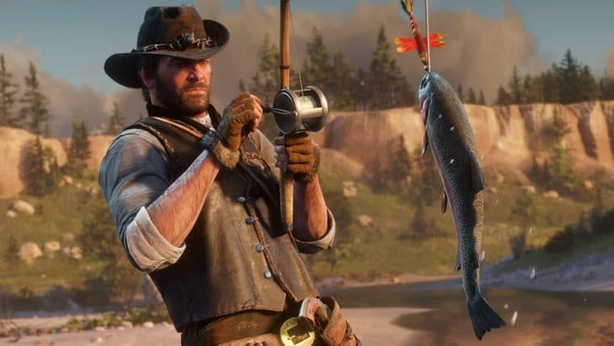
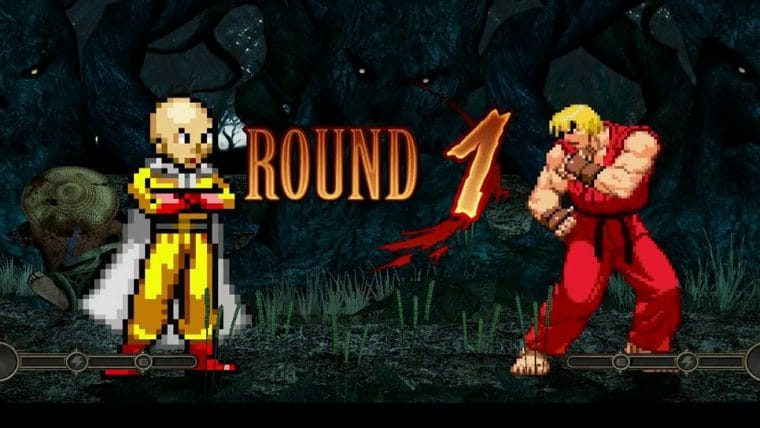

ENTRE OS HERÓIS SEM SUPERPODERES
“Viúva Negra vence todos”, diz
Neil de Grasse Tyson sobre luta
entre super-heróis.

ACABE COM O TÉDIO
9 jogos para escapar do mundo.
real

AI SIM!
"P.T. foi um experimento, ain-
da quero criar um jogo de ter-
ror revolucionário", diz Kojima.

VALE TUDO